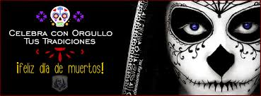

FESTIVIDAD DE DIA DE MUERTOS EN MEXICO
QUE SE CELEBRA
Es una festividad que se celebra en México y en algunos países de América Central, así como en muchas comunidades de los Estados Unidos, donde existe una gran población mexicana y centroamericana. La Unesco ha declarado la festividad como Patrimonio Cultural Inmaterial de la Humanidad.
- El culto a la muerte en México no es algo nuevo, pues ya se practicaba desde fechas próximas al año 1800 a.C. Así mismo, en el calendario mexica que se localiza en el Museo de Antropología, se puede observar que entre los 18 meses que forman este calendario, había por lo menos 6 festejos dedicados a los muertos. Los evangelizadores cristianos de tiempos coloniales aceptaron en parte las tradiciones de los antiguos pueblos mesoamericanos para poder implantar el cristianismo entre dichos pueblos.
- Los orígenes de la celebración del Día de Muertos en México son anteriores a la llegada de los españoles. Hay registro de celebraciones en las etnias mexica, maya, purépecha y totonaca. Los rituales que celebran la vida de los ancestros se realizan en estas civilizaciones por lo menos desde hace tres mil años. Entre los pueblos prehispánicos era común la práctica de conservar los cráneos como trofeos y mostrarlos durante los rituales que simbolizaban la muerte y el renacimiento.
